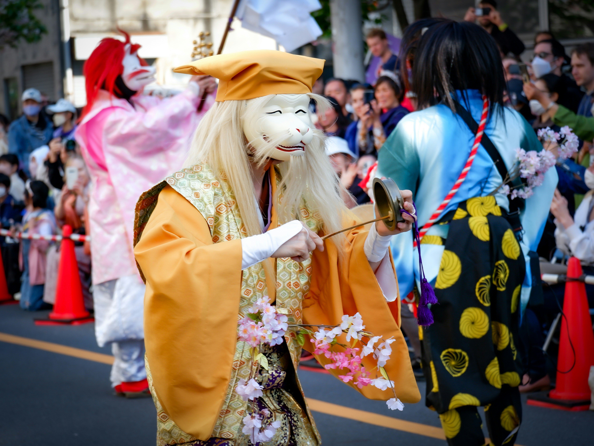
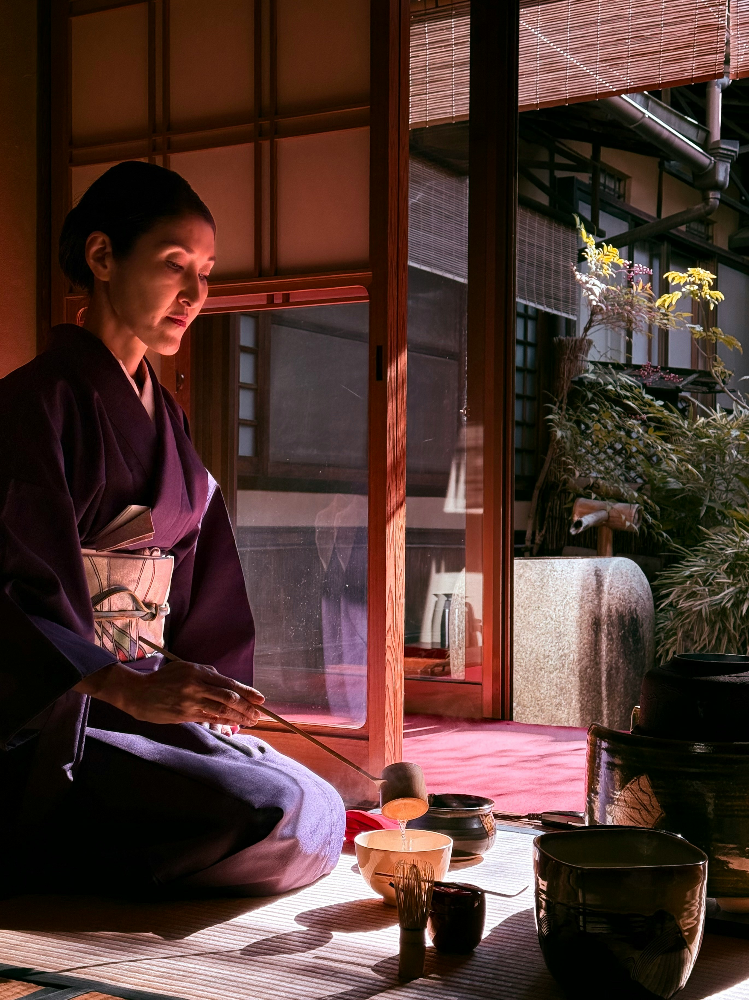

Discover the rich traditions, delicious food, and unique customs that make Japan special.
Japanese cuisine is known for its fresh ingredients, beautiful presentation, and unique flavors. Popular dishes include sushi, ramen, tempura, and miso soup.
Japan celebrates many traditional festivals throughout the year. These festivals, known as matsuri, often feature colorful decorations, traditional clothing, music, and dancing.

The Japanese tea ceremony is a traditional practice centered around preparing and serving matcha green tea. It emphasizes respect, harmony, cleanliness, and tranquility.
